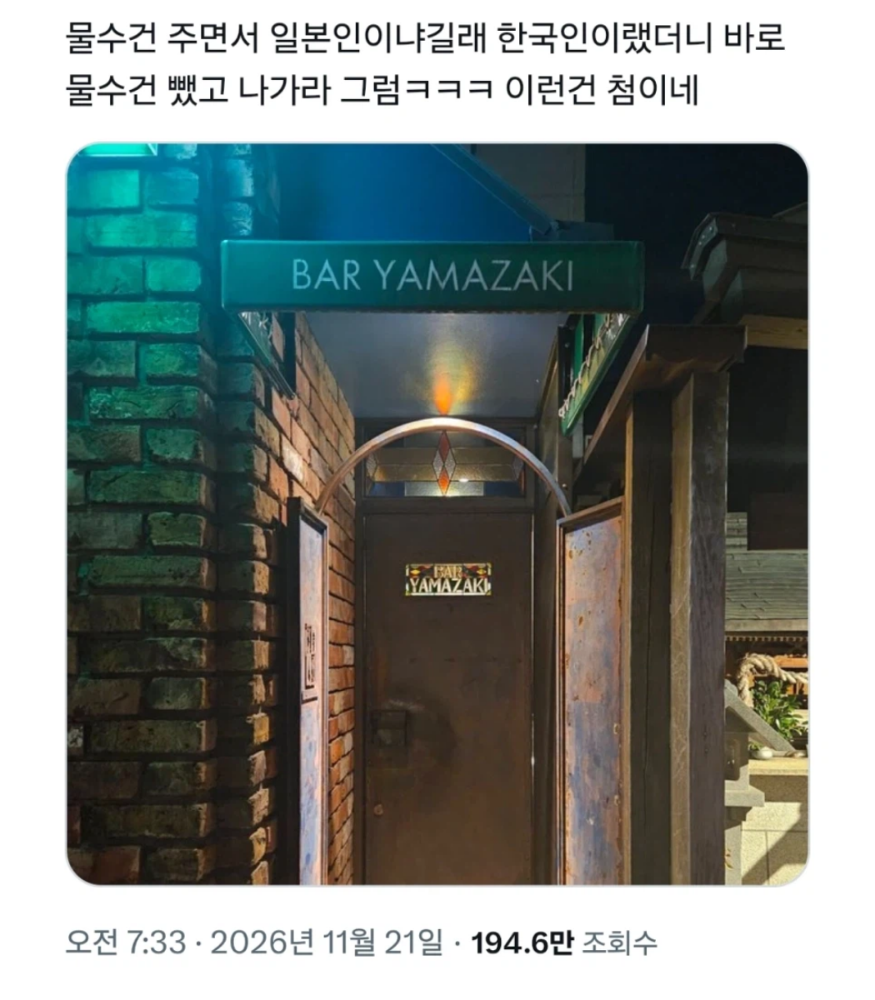
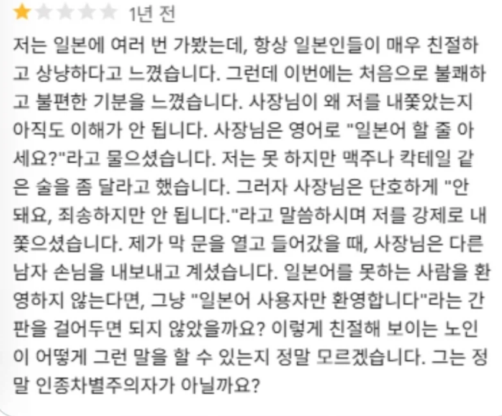
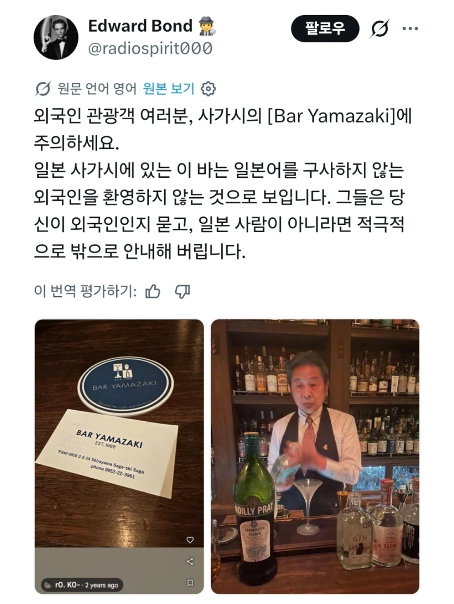

https://bbs.ruliweb.com/best/board/300143/read/77483377



일본어 못하는 외국인 쫒아내면서 영어는 왜 쓰는거임ㅋㅋㅋ
https://bbs.ruliweb.com/best/board/300143/read/77483377



일본어 못하는 외국인 쫒아내면서 영어는 왜 쓰는거임ㅋㅋㅋ
사가는 진짜 ㅈ만한 시골도시라..
타이포그래피만 쓰고싶대
그럴거면 문 앞에 붙여놓든가.
파는 사람 마음이지 뭐.....
좀 ㅈ같기는 해도...
바를 운영하면서 위스키나 칵테일 파는 주제에 외국인은 배척하는게 존나 웃기네.
외국인 안받을려면 좀 적어놔라
구글 리뷰 보니까 1년전부터 1개월전까지는 한국인 리뷰 존나 좋게 달려있는데 뭐지 ㅋㅋㅋㅋ
일본어 가능한 한국인이었겠지
하수 : 혐한하는 가게라고 발작함
고수 : 대체 어떤 씨발놈을 겪었던건지 감도안옴
구글리뷰나 x같은건 보통 자기유리한입장으로 쓰는거라 ㅋㅋ
일반인 : 입구에 적어 놓으면 안 들어갈 거 아니냐
원종단 : 1년 넘게 입구에 안 적어 놔도 모르고 들어간 외국인 잘못
해외바 개척하느라 수고가 많네
높은 확률로 테이블 차지 이해못해서 대판 한번한듯
일부러 한 놈만 걸려라 하면서 면박주고싶어서 입구에 안내 문구 쓰지도 않았네.
아니 ㅅㅂ 사가는 일본 애들도 안가는 시골인데 뭐하러 저기까지 가서 차별 당하고 오냐 이해가 안가네
한국으로 따지면 어디 정도 됨?
그냥 어디 보성,장흥 같은 남쪽 변두리 동네 같은곳임. 진짜 랜드마크도 관광객도 거의없는 시골현
바에서 위스키 몇잔 마시면 한병 사는 값 나오는게 많이 아까움...
저거 저 원문 트윗 쓴 사람 봤었는데
일본인들이 대신 사과하면서
아는 사람들은 알만한 예민한 가게라고 하드라
일어유무보다는 대응한 직원이 랜덤이었던거아닐까
아예 이해가 안가는건 아닌게 좀 차분한 분위기의 바라고 해도 결국 술마시는곳이라 온갖 개잡종같은 인간들이 꼬일수밖에없음. 같은 말하는 진상새끼만으로도 좆같은데 말도 안통하는 외국진상이면 씨발 경찰부르는거 아니면 답이없음ㅋㅋㅋㅋㅋㅋㅋ
혐한이든 외국인혐오든 그냥 내국인만 받고싶어하든 여기저기 데였든 다좋다 이거야 안내판이라도 올려놓던가 ㅋㅋㅋ
난 일본어를 할 줄 아는데
일본 살 때 오사카 오코노미야키 바 가게에서 혼자 먹고 있는데
중국인 손님이 들어와서 주문하려 하니 외국인은 안된다고 나가라고 하는거임
그래서 '저도 외국인인데 나가야 할까요?' 했는데
당황하더니 '일본어가 가능하신 분이면 괜찮습니다. 일본어가 안되면 서비스가 어려워서 그렇습니다' 이렇게 얼버무리더라
거 요즘 번역기쓰면 그깟 식당 주문이 뭐가 어렵다고
일어 못하면 출입 거부 : ㅇㅈ
일어 할 줄 아는 외국인 출입 거부 : ㅂㅅ
함정질문이지